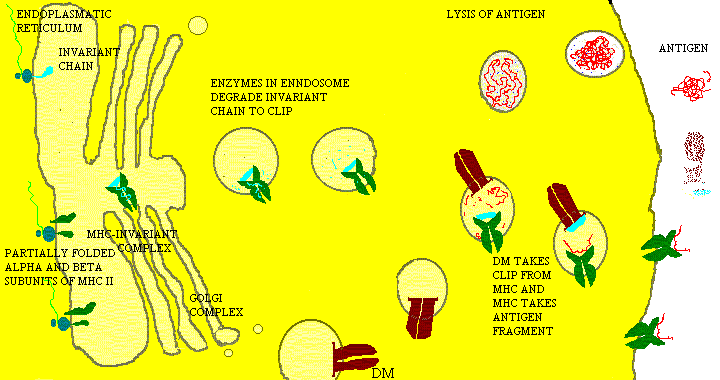

|
Субъединицы MHC-II молекул сразу после образования соединяются в ЭПР с инвариантной цепью (IC), препятствующей ассоциации MHC-II с эндогенными антигенами. Проходя через Комплекс Гольджи, IC редуцируется до КЛИПА. Внутри эндосом DM обменивается с МНС КЛИПОМ,
освобождая MHC-II для связывания с переваренными в фагосомах до олигопептидов экзогенными антигенами
|
 |